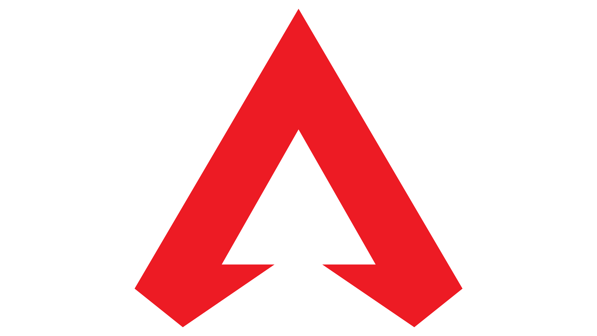

Apex Legends
Apex Legends es un videojuego gratuito perteneciente a los géneros battle royale y hero shooter en primera persona, desarrollado por Respawn Entertainment y publicado por Electronic Arts. Fue lanzado para Microsoft Windows, PlayStation 4 y Xbox One el 4 de febrero de 2019.
Temporada 0 (o pretemporada): Trajo consigo el "Rifle Havoc", y la reliquia de Wraith, además había 8 leyendas de las 18 que hay actualmente. El mapa para jugar era “Cañón de los reyes” Esta temporada duró desde el 04/02/19 hasta el 19/03/19
Temporada 1 “Frontera Salvaje”: Trajo consigo a una nueva leyenda “Octane” además del pase de batalla vigente. Esta temporada duró desde el 19/03/19 hasta el 18/06/19.
Temporada 2 “Carga de Batalla”: Trajo consigo a una nueva leyenda “Wattson”, una nueva arma la “L-Star EMG”, se añadió el pase de batalla vigente y también se añadieron los gestos de vuelo, las pantallas de carga personalizadas, paquetes de música, nuevo loot y las rankeds de la temporada. También hubo un evento en el cual se añadió la reliquia de Bloodhound. Se añadió una variación al mapa “Cañón de los reyes” Esta temporada duró desde el 02/07/19 hasta el 01/10/19.
Temporada 3 “Fusión”: Trajo consigo a una nueva leyenda “Crypto”, una nueva arma el “Rifle de Cargas”, se añadió el pase de batalla vigente y también se añadieron los amuletos, se añadió también las rankeds de la temporada y se añadió nuevo loot. Hubo varios eventos en los cuales añadieron la reliquia de Lifeline y Pathfinder. Se añadió un nuevo mapa “Fin del mundo” Esta temporada duró desde el 01/10/19 hasta el 04/02/20.
Temporada 4 “Asimilación”: Trajo consigo a una nueva leyenda “Revenant”, una nueva arma la “Sentinel”, se añadió el pase de batalla vigente además de las rankeds de la temporada las cuales llegaron con añadidos puesto que agregaron el nivel “maestro” y agregaron las divisiones de nivel (en un mismo nivel hay diferentes subniveles, del 1 al 4), se agregó nuevo loot. Hubo varios eventos en los cuales agregaron ellos Evo escudos (cuanto más daño hagas más nivel de escudo y mejor escudo tendrás.) También se añadió la reliquia de Octane y los fragmentos de reliquia los cuales sirven para comprar la reliquia que tu quieras. Se añadieron los dúos (solo podías jugar en tríos hasta este evento) se añadió la rotación de mapas y se añadió las pruebas de Bloodhound. Se añadió una variación al mapa de “Fin del mundo” Esta temporada duró desde el 04/02/20 hasta el 12/05/20.
Temporada 5 “Favor y Fortuna”: Trajo consigo a una nueva leyenda “Loba”, se añadió el pase de batalla con su respectivas rankeds se añadieron también las interacciones entre leyendas y las misiones que prevalecen hasta el día de hoy. Hubo un evento en el cual se añadió las balizas de reaparición móvil (las cuales siguen en el juego) y la reliquia de Mirage. Se añadió una variación al mapa de “Cañón de los reyes” La temporada duró desde el día 12/05/20 hasta el 18/08/20.
Temporada 6 “A tope”: Trajo consigo una nueva leyenda “Rampart”, se añadió una nueva arma la “Volt SMG”, se añadió también el pase de batalla el cual traía la novedad de los Espráis Holográficos se añadieron las rankeds de la temporada, se añadió el sistema de crafteo que depende de materiales, para fabricar componentes de armas y accesorios como mochilas, cascos, etc. en máquinas duplicadoras la cuales están esparcidas por el mapa. Además, trajo también una nueva misión. Hubo un evento en el cual se añadió la reliquia de Caustic junto con el crossplay entre consolas. Se añadió una variación al mapa “Fin del mundo”. Esta Temporada duró desde el 18/08/20 hasta el 04/11/20.
Temporada 7 “Ascensión”: Trajo consigo a una nueva leyenda “Horizon”, se añadió el pase de batalla además de subías de nivel consiguiendo estrellas, se añadieron las rankeds de temporada, y se añadió también nuevo loot. Los grandes añadidos fueron el añadido de los clubs y su salida en la plataforma de Steam. Se añadió también una nueva misión. Hubo un evento en el cual se añadió la reliquia de Gibraltar, y se añadió un nuevo mapa “Olympus”. Esta temporada duró desde el 04/11/20 hasta el 02/02/21.
Temporada 8 “Estragos”: Trajo consigo una nueva leyenda “Fuse” se añadió una nueva arma el “Rifle de repetición 30-30” Se añadió el pase de batalla y sus respectivas rankeds, se añadió también nuevo loot y una nueva misión. Hubo un evento en el cual marcó la salida del juego para Nintendo Switch, también se añadieron un nuevo objeto el “escudo térmico”, el “hueco de supervivencia”, la opción de no rellenar el matchmaking, y la reliquia de Bangalore. Se añadió una variación al “Cañón de los reyes”. Esta temporada duro desde el 02/02/21 hasta el 04/05/21.
Temporada 9 “Legado”: Trajo consigo a una nueva leyenda “Valkyrie” se añadió una nueva arma el “Arco Bocek” se añadió el pase de batalla junto con sus respectivas rankeds. Introdujo un nuevo modo de juego “Arenas” y se añadieron nuevos mapas al susodicho modo de juego. Se añadió nuevo loot, gestos para las leyendas y una nueva misión. Hubo un evento en el cual se añadió la reliquia de Revenant. Y hubo otro evento en el cual se añadió un nuevo mapa para Arenas. Esta temporada duró desde el 04/05/21 hasta el 03/08/21.
Temporada 10 "Eclosión": Trajo consigo a una nueva leyenda “Seer” se añadió una nueva arma la “LMG Rampage”, se añadió el pase de batalla con sus respectivas rankeds. Se añadió nuevo Loot, hubo eventos flash para las arenas. Hubo un evento de un town takeover de Rampart y se añadió su reliquia. También hubo cambios en el mapa de “Fin del mundo”. En esta temporada se descarta los cómics de lore del juego, ya que ahora se distribuyen como cortometrajes en Twitter, se liberan en el perfil de Apex Legends (@playApex) y Respawn (@Respawn). Esta temporada duró desde el 03/08/21 hasta el 02/11/21.
Temporada 11 "Escape": Trae consigo a la futura leyenda: Ash. Desde Titanfall 2 a las arenas, la nueva legenda. El C.A.R SMG es el arma nueva disponible a partir de la temporada 11, traía desde Titanfall 2 con un nuevo mapa disponible llamado "Point Storm" para Battle Royale.
Temporada 12 "Disidencia": Se presenta una nueva leyenda llamada Mad Maggie, una vieja amiga de Fuse, responsable de la destrucción del mapa de la temporada 8 y que se hizo cargo brevemente de los juegos de Apex. La temporada comienza con un período de tres semanas de un modo de juego por tiempo limitado llamado "Control", un 9v9 donde los jugadores tienen que controlar las zonas A, B y C para obtener puntos. Olympus fue el mapa que recibió una actualización añadiendo zonas; La temporada llegó durante el tercer aniversario por lo que se llevó a cabo un evento donde los jugadores podían obtener recompensas creadas por miembros de la comunidad, basadas en diversas leyendas.
Temporada 13 saviors": Nueva leyenda: Newcastle, antiguo subcampeón de las clasificaciones de Apex Legends para ser una leyenda después de que Forge fuera el campeón. Un avance sobre el mapa Punto Tormenta con un enorme monstruo asesinado en la costa oeste, y el regreso de Fin Del Mundo.
Sistema operativo: Windows 7 de 64 bits.
CPU: Intel Core i3-6300 3,8 GHz/AMD FX-4350 4,2 GHz con procesador de 4 núcleos.
RAM: 6 GB.
GPU: NVIDIA GeForce GT 640/Radeon HD 7730.
RAM DE GPU: 1 GB.
DISCO DURO: al menos 22 GB de espacio libre.